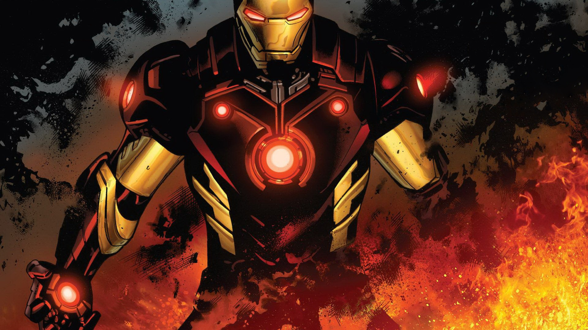
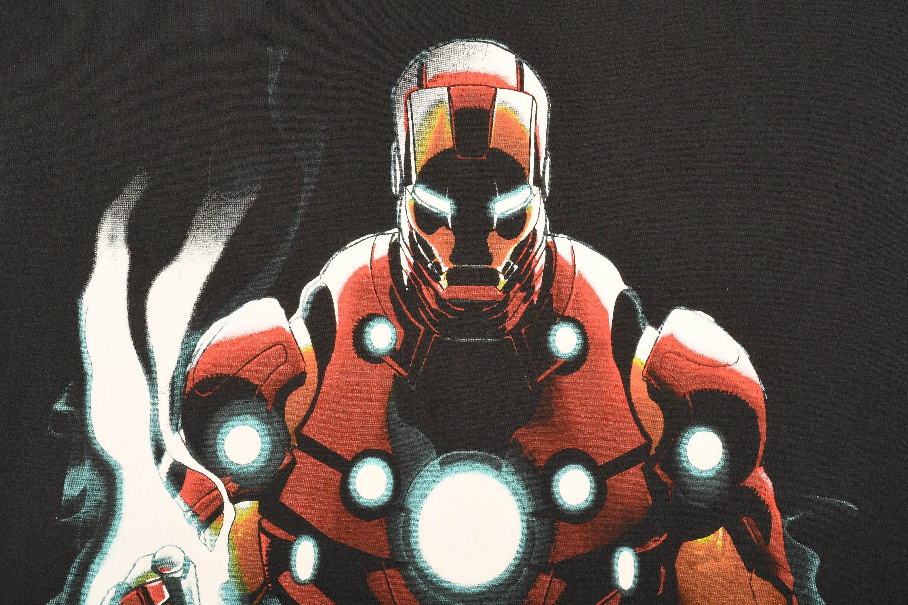

Iron Man



Biografia de IronMan
Anthony Edward "Tony" Stark es un personaje ficticio que da vida a este personaje, un multimillonario magnate empresarial y filántropo estadounidense, playboy e ingenioso científico, que sufrió una grave lesión en el pecho durante un secuestro en el Medio Oriente. Cuando sus captores intentaron forzarlo a construir un arma de destrucción masiva, elabora, en cambio, una armadura para salvar su vida y escapar del cautiverio. Más tarde, Stark desarrolla su traje, agregando armas y otros dispositivos tecnológicos que diseñaba a través de su compañía, Industrias Stark. Usa el traje y las versiones sucesivas para proteger al mundo como Iron Man. Aunque al principio ocultó su verdadera identidad, Stark finalmente declaró quién era en un anuncio público.
Inicialmente, la creación de Iron Man fue inspirada en temas de la Guerra Fría, particularmente el papel de la tecnología y la industria estadounidenses en la lucha contra el comunismo. Las imaginaciones posteriores de Iron Man han pasado de estos motivos a los asuntos contemporáneos de la época, como el terrorismo, la corrupción y la delincuencia en general. Durante la mayor parte de la historia de la publicación del personaje, Iron Man fue miembro y líder del equipo Los Vengadores, ha aparecido en varias encarnaciones de sus diversas series de cómics y también fue adaptado para varios programas de televisión y películas animadas.
Anthony Edward Stark es el hijo del jefe de Industrias Stark, Howard Stark y su esposa Maria Stark. Un niño genio que ingresa al MIT a la edad de 15 años para estudiar Ingeniería Mecánica. Después de que sus padres mueren en un accidente automovilístico, hereda la compañía de su familia. Mientras observaba los efectos de su tecnología experimental en el esfuerzo bélico estadounidense, Tony Stark es herido por una bomba y capturado por Wong-Chu, quien le ordena diseñar armas. Sin embargo, las lesiones de Stark son graves y la metralla se dirige a su corazón. Su compañero prisionero, Ho Yinsen, un físico ganador del Premio Nobel, cuyo trabajo se había ganado la admiración de Stark en el colegio, construye una placa pectoral magnética para evitar que la metralla alcance el corazón de Stark, manteniéndolo vivo. En secreto, Stark y Yinsen utilizan el taller para diseñar y construir una armadura mecanizada, la cual utiliza Stark para escapar. Sin embargo, durante el escape, Yinsen sacrifica su vida para salvar a Stark, distrayendo al enemigo para que Tony recargara. Stark se venga de sus secuestradores y escapa para reunirse con las fuerzas estadounidenses, conociendo en su camino a un piloto herido de la marina estadounidense, James "Rhodey" Rhodes.